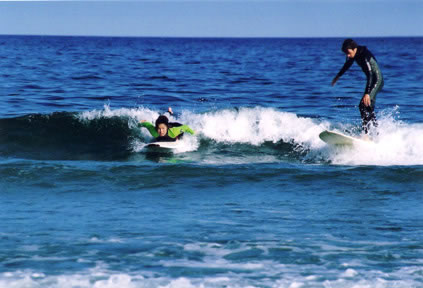

relax, visualize.
| z, ? | toggle help (this) |
| space, → | next slide |
| shift-space, ← | previous slide |
| d | toggle debug mode |
| ## <ret> | go to slide # |
| c, t | table of contents (vi) |
| f | toggle footer |
| r | reload slides |
| n | toggle notes |
| p | run preshow |
| P | toggle pause |
relax, visualize.
Let's have a discussions. I don't have the answer. I'm just telling some stories, making some connections. I'm saying: this is what works for me, can you relate? Let's have a discussion about living happy productive lives. .notes tell people to sit down
J-Bird is the reason I surf. Everything I talk about we went through together.


This is where I work. You could too.
Escape existing only inside your head.
Ezekiel
We have 2 mental modes, the default one where we are recalling that past, anticipating the future, criticizing our action. The other one, where we are just existing. We are happier in the 2nd one.
Katrina
Presence is a way to clear out the working memory, and make more available for the task you really want it applied to: programming.
of what around you and how your body feels
doing things with intention
escape the multi-tasking life
The feeling of being present? The feeling of catching a wave? .note I won't explain the benefits of Being Present. I can only try to explain what it's like and how I get there. And maybe that will help you find your own way there.
legendary pipeline surfer
--- Gerry Lopez
Surf is where you find it: page 107
What do you think of when I say surfing?
Go to birdswell.com and buy a t-shirt
Everyone needs marketing, I guess?
like the the kernel and compiler developers and the rubinius and jruby guys. Big heavy stuff.
Growing up at Malibu and surfing there, I was able to see some of the best surfers in the world. I am a very visual person. That’s why I am into photography and I really enjoy films. So aesthetically, I will just like the way someone surfs, especially if they are smooth. That’s why I like how Joel (Tudor) surfs or someone like Dane Peterson. A smooth style is something that I appreciate and I want to emulate with my surfing. I really have a difficult time watching people surf when they are just “all over the place,” I just can’t visually accept it. (laughs)

|

|
|  |
Everyone starts as a beginner. But even the most experience surfers have kook moments
kooking it up sometimes means lazily catching a wave and riding it straight on, instead of going for the "down the line" maneuver. .notes Like writing terrible terrible code on purpose just to explore something. Or to teach something.
def traversal_from_hash(from_hash)
traversal = Proc.new do |hash_a, hash_b, opts1|
a_vals = []
b_vals = []
sub_procs = [Proc.new{ "" }]
hash_a.each do |key, value|
if (value.is_a?(Hash) && hash_b[key].is_a?(Hash))
sub_procs << Proc.new do |opts2|
traversal.call(value, hash_b[key], opts2)
end
else
unless hash_b[key].nil?
a_vals << value
b_vals << hash_b[key]
end
end
end
sub_proc = Proc.new do |opts3|
sub_procs.collect do |sp|
sp.call(opts3)
end.join("")
end
a_vals.uniq.collect do |a_val|
yield a_val, b_vals, sub_proc, opts1
end
end
endkook programmer .notes the simple explanation is I should have paired .notes the harder lesson is that this code works. And it's ok to be a kook sometimes. Or rather, when you are stuck, fall back on what you know. This code was written with a puts statement between every line with lots of slow iterations.
(not a Kook)
--- Gerry Lopez
Surf is where you find it page 128. Gerry tells the story of riding giant unpredictable waves in G-Land. http://en.wikipedia.org/wiki/G-Land .note The ocean always wins and humility is healthy.
winter surfing in maine .notes Water Temperature http://www.ndbc.noaa.gov/view_climplot.php?station=44007&meas=st
I've taken many people out for their first surf. Or first few surfs. Only a few have truly taken to it. Made it a priority.
I don't have the great big grey Gandalf beard up here to really sell this to you like it's a lifetime of wisdom. But I buy into it.
Buddha. The original Zen master. Life story is basically. Extreme Decadence, Extreme Piety. The Middle Path.
Balance. this is an ordered list, but there are no absolutes. Friends don't ALWAYS take priority over work. There is balance
Faith means many thinks to different people. To me it's surfing. It's that rare sense of connection with the universe. .notes this is an assignment, not an assertion. I've chosen this assignment for my faith.
characteristic smile picture
--- Gerry Lopez
page 166
Surfing is good for you
Bipedalism
good for your wrists. TODO: good for so many thing .notes Vitamin D
Shiva. Not the indian God, just the middle name my Yoga-obsessed aunt gave to my cousin. Which he now goes by Took my on my first Surf. He was living in a shack his artist friend built, with ilegal plumbing. Over worked as an architect, on the fritz with his girlfriend at the time. Surfing every morning. Loving Life.
J-Bird. My lifelong surf companion. My Wife. An Obsession with perfection. And with surfing. A roller-coaster of emotion as an Addict who rages at the need to surf. And is SOO excited when she finally catches that first wave. Her stoke never fades.
Cynthia: Surfing is My Drug
Chris: Surfing keeps me sane (or less insane)
patience .notes "No other thoughts in my head"
TODO: no child labor .notes surf before you go to work
I knew him as "Director of engineering". Opened my eyes to surfing new places, exploring. Surfing in the winter. Trying new boards One of the first time's Ed and I surfed together I can only recently started at Brontes. He asked me "How are things"? I said "which, work? or surf?" He replied, oh well surf I guess. Clearly you understand what's more important. .notes It's critical to always mix work and surfing. The yellow board, a big hull shaped by Ryan Lovelace, was picked up while I was in LA, repairing COSs and meeting customers. I rode it at Ricon, County Line, Topanga Canyon and Cardiff Reef. In between each session, I repaired a COS. It's more complicated than sending a tech or paying shipping on a new board, but, that's far less satisfying. .notes The yellow board, was picked up while I was in LA. I rode it at Ricon, County Line, Topanga Canyon and Cardiff Reef. .notes In between each session, I repaired a COS.
--- Ed
(J-Bird drags me out of Bed at 6)
pair says: OMG this bug or this problem :-( I say: OMG this bug! :-) It's so interesting. So intriguing. why why why. how how how.
--- Gerry Lopez
quote by Gerry Lopez. He was talking about his experience big wave surfing. Fortunately for me, I can get this feeling from less life-threatening situations.
The long peeling waves. Sweet Sweet longboard rides. Otters! But the people :-(
Application to programmers: Welcome and encourage new ideas. Be constructive not negative. We don't do this face to face, but we see it anonymized online all the time. "Haters hating" A style that is not yours doesn't means it's wrong.
Grant 'twiggy' Baker. Stuff breaks in production. You might freak out. But then you must calmly
--- Gerry Lopez
page 115
Don't drop in. Your chance will come.
There's always another wave.
Be accountable
Be accountable.
Accidents happen
Fix them. Get a professional to help you.
Share and Encourage
Cheer for strangers. Share the waves.
Relaxing under Stress
Lets go surfin now. Everybodys learning how. Come on and safari with me.
Marin county. The usual weekday breaks. State Parks. Santa Cruz